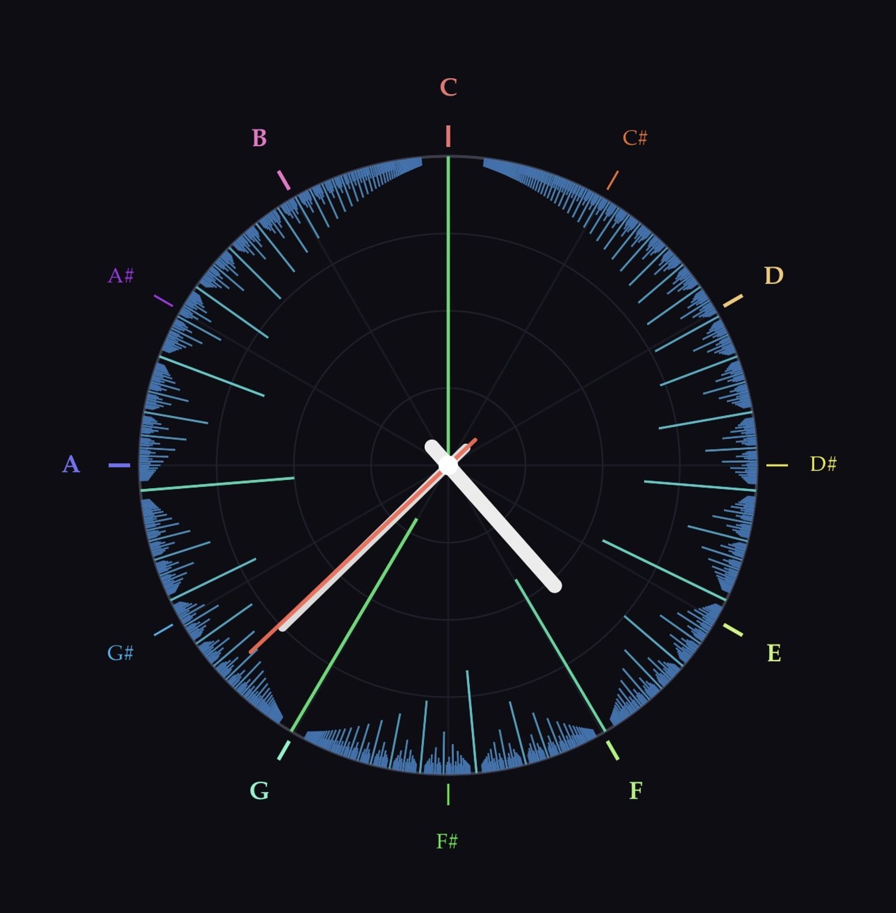

The Surprising Consonance Map
Draw the intervals. Recognize the shape.
Depth

Darakshan had wanted to see that map for a long time. When it finally became easy enough to draw — score every ratio by how simple it is, arrange the results around a circle representing one octave — this is what appeared.

That’s a Mandelbrot set.

Not a visual resemblance. The same object, seen from two different angles.
To understand why, you need one idea: the attractor. Some mathematical processes, when you repeat them, converge — they settle toward a stable value no matter where you start. Others diverge — they spiral outward to infinity. The boundary between the two is where things get interesting. In the 1970s and 80s, Benoît Mandelbrot2 was studying exactly this boundary for a deceptively simple formula — apply a rule, feed the result back in, repeat, and ask: does this converge or escape? He expected the boundary to be smooth and unremarkable. When the image came back, he thought the computer had a bug. The boundary was infinitely complex, self-similar at every scale, inexhaustible. He checked the program. It was right.
What Mandelbrot had found was a map of attraction. The large cardioid at the center is the region of simplest stability. Around it cluster smaller bulbs, and around each of those, smaller ones still, branching without end. Each bulb sits at a position indexed by a fraction, and the size of the bulb is governed by the simplicity of that fraction. The bulb at position 1/2 is the largest. The bulb at 1/3 is next. Then 2/5, then 3/7. The tallest bars in the harmonic chart occupy exactly those positions. Bulb size and consonance score are the same ranking, expressed in two different languages.
Look again at the harmonic clock image. Notice the wide dark gaps flanking the tallest spikes — the deep silence around the fifth and the fourth, the emptiness around the octave. Those gaps are not accidents. They are a provable property of the rational numbers: simple ratios repel each other. The more consonant the interval, the wider the moat of complexity surrounding it. This structure has a name — the Farey sequence — and the mathematics behind it belongs in the references. What matters here is that musicians have always felt it. The fifth sounds like itself, and nothing nearby sounds close. The moat is arithmetic, not psychology.3
Mandelbrot applied a formula and found a shape he didn’t expect. Darakshan drew a map long wanted and found the same shape looking back. Two questions, one surprise. The echo is not coincidental — it is what happens when you draw the boundary between order and complexity, wherever you find it.
Whether that boundary also appears in the space where a neural network learns to think — where the weights that converge are separated from the weights that don’t by a boundary of similar complexity — is an open question worth asking. [056]